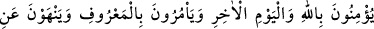
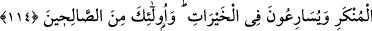

anlıyorsanız, âyetlerimizi size açıklamış bulunuyoruz.
“Ama hepsi bir değildir.” Bütün kitap ehli kötülüklerde ve çirkin davranışlarda
birbirlerine denk ve eşit değildir. Kitap ehlinin birbirlerine denk olmadıklarını
belirtmekten maksat, zikredilen çirkin davranışlarla muttasıf olmanın temelinde ortak
olmadıklarını göstermektir. Yoksa, -bu davranışlarla aslında muttasıf oldukları için- bu
muttasıf olma hâlinin mertebelerinde müsâvî olmadıklarını belirtmek değildir. Bu çirkin
davranışları, aslında hepsi yapmaktadır, ancak mertebe mertebe. Kimi az, kimi çok.
“Kitap ehli içinde gece saatlerinde, Allah’ın âyetlerini okuyarak secdeye kapanan
istikamet sahibi (dosdoğru yaşayan) bir topluluk vardır.” Bu cümle kitap ehlinin
birbirine denk olmadığını beyân etmek için getirilmiş bir başlangıç cümlesidir. Kelâmın
tamamının şöyle olması gerekmektedir: “Kitap ehlinden kötü bir topluluk vardır.”
Ancak bu kelâm, iki zıttan birinin zikredilmesi, diğerinden müstağnî bırakacağı için
açıkça zikredilmemiştir. Açıkça zikredilen kelâmın mânası şöyledir: Kitap ehlinden
dosdoğru ve âdil bir topluluk vardır.
Bunlar müslüman olan Abdullah b. Selam (r.a.) vb. yahûdîlerdir. Bu âyet-i kerîme,
yahûdî bilginlerinin, Abdullah b. Selam ve öteki yahûdîlerden müslüman olanlar için:
“Muhammed’e sadece en şerlilerimiz îman etti. Bunlar bizim en iyilerimiz olsalardı,
atalarının dînini terketmezlerdi.” demeleri üzerine nâzil olmuştur. Ya da, evvâbin
namazı kılan bir topluluk hakkında nâzil olmuştur. Evvâbin namazı, akşam namazından
sonra kılınan 2-12 rekatlık bir namazdır.
114. Onlar, Allah’a ve âhiret gününe inanırlar; iyiliği emreder, kötülükten
menederler; hayırlı işlere koşuşurlar. İşte bunlar iyi insanlardandır.
“Allah’a ve âhiret gününe” şerîatın bildirdiği şekliyle “inanırlar.” Bu ifade
yahûdîlerin “Üzeyr, Allah’ın oğludur.” dedikleri; bazı peygamberleri ve kitapları inkâr
ettikleri, ayrıca âhiret gününü aslî özelliklerinin dışında özelliklerle vasfettikleri halde
Allah’a inandıklarını söylemelerinin, Allah’a ve âhiret gününe inanmakla alâkası
olmadığına dâir bir târizdir.
“İyiliği emreder, kötülükten menederler.” Bu ifade de; kitap ehlinin iyiliği emr ve
kötülükten nehy husûsunda çok yumuşak davrandıklarına hattâ insanları Allah yolundan
çevirip saptırarak yapmaları gerekenin tam tersini yaptıklarına dâir bir târizdir. Çünkü,
insanları Allah yolundan çevirip sapıtmak; kötülüğü emredip iyiliği menetmektir.
“Hayır işlerine koşuştururlar.” Hayra koşuşturmak, hayra çok rağbet etmek demektir.